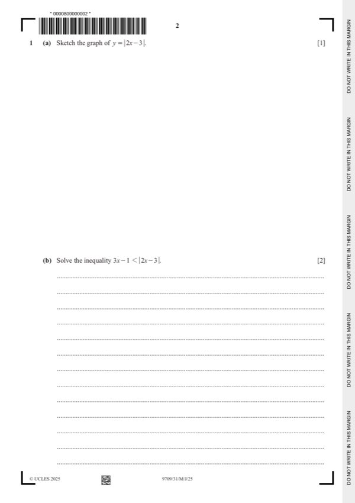

Question 1

Original paper page 2
Part 1(a) — solution
- [B1] Symmetrical. In correct position
Mark points
- [B1] Symmetrical. In correct position
Part 1(b) — solution
- [B1] Obtain/use: Obtain critical value 54 from 3x − 1 = 3 − 2x
- [B1] Obtain/use: State final answer x 54
Mark points
- [B1] Obtain/use: Obtain critical value 54 from 3x − 1 = 3 − 2x
- [B1] Obtain/use: State final answer x 54
Part 1 — solution
Answer: 2
2
Mark points
- Correct result: 2